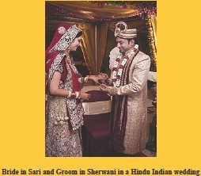
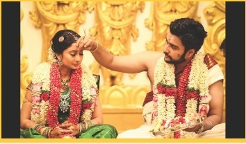

INCREDIBLE INDIAN HERITAGE
Incredible India!
The culture of India is one of the oldest and unique. In India, there is amazing cultural diversity throughout the country. The South, North, and Northeast have their own distinct cultures and almost every state has carved out its own cultural niche. There is hardly any culture in the world that is as varied and unique as India. India is a vast country, having variety of geographical features and climatic conditions. India is home to some of the most ancient civilizations, including four major world religions, Hinduism, Buddhism, Jainism and Sikhism.
A combination of these factors has resulted into an exclusive culture- Indianculture. Indianrulture is a eompo'°...ite mixture oh-aryiog styles and influences.Inthe matter of ruis.ioe, for instance, the orth and the South are totally different. Festivals inIndia are characterized by color, gaiety,enthusiasm, prayers and rituals. Indie realm of music, there are varieties of folk, popular, pop, and classical music. The classical ttaditioo of music: inIndia includes the Carnatic and die Hindustani music..
CONTECT OVERVIEW (You can jump to the desired content also):
RELIGIOUS CULTURE
Indian-origin religious Hinduism,jainism,Buddhism and sikhism, are all based on the concept od dharma and karma, Ahimsa , philosophy of nonviolence, is an important aspect of navtive Inadian faiths.
For generation, India has a prevailing tradintion of the joint familye system. It is when extended members of a family-parents, childern, the children's spouses and their offspring , etc - live together. Usually, the oldestt male member is the head on the joint indian family system. he mostly makes all important decisions and rules, and other family members are likely to abide by them.


FESTIVALS
India is a country of dynamic culture, and every Indian celebrates many festivals wholeheartedly throughout the year. Every festival is unique in its way. celebratinmg them while you pay a visit to the country is a great chance to explore the properity of Indian culture and heritige.
1.MAKAR SANKRANTI
Falling on the date of January 15 annually, this occasion marks the transition of the sun from the zodiac of Sagittarius (dhanu) to Capricorn (makara).

Lohri Festivals
2.HOLI
With the throwing of colored powder and water balloons, Holi has become known as India’s most vivid, joyous festival. International travel groups selling tours to the country often place photos of boisterous Holi celebrations alongside pictures of the Taj Mahal.
Although the Hindu festival of colors finds its origins in South Asia, it has now gained popularity across the world, with Holi events organized across the U.S., the U.K. and elsewhere.
CUISINE
The cuisine of India is one of the world's most diverse cuisines,characterized by its sophisticated and subtle use of the many spices, vegeta.bles,grains and fruits grown across India. The cuisine of each geographical region includes a wide assortment of dishes and cooking techniques reflecting the varied demographics of the ethnically diverse Indian subcontinent. India's religious beliefs and culture have played an influential role in the evolution of its cuisine.Vegetarianism iswidely practiced in many Hindu, Buddhist and Jain communities.
India's unique blend of cuisines evolved through large-scale cultural interactions with neighboring Persia,ancient Greece, Mongols and West Asia. New World foods such as chilipeppers, tomatoes,pota.tocs and squash, introduced by Arab and Portuguese traders during the sixteenth century,and European cooking styles introduced during the colonial period added to the diversity of Indian cuisine.
CLOTHING
Clothing in India changes depending on the different ethnicity, geography,climate, and cultural traditions of the people of each region of India. Historically, male and female clothing has evolved from simple garments like kaupina, langota, dhoti, luogi, sari, gamcha, and loincloths to cover the body into elaborate cosrumes not only used in daily wear, but alsoon festive occasions, as well as rituals and dance performances. In urban areas, western clothing is common and uniformly worn by people of allsocial levels.
ometimes,color codes are followed inclothing based on the religion and ritual concerned. The clothing in India alsoencompasses the wide variety of Indian embroidery,prints, handwork,embellishment,styles of wearing cloths. A wide mix of Indian traditional clothing and western styles can be seen in India.